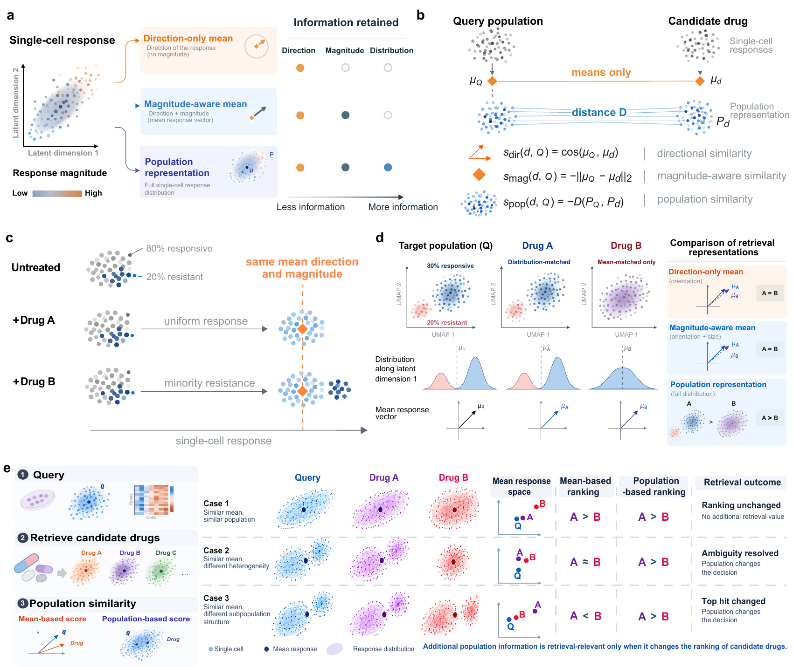

Use magnitude-aware means as the control
Comparing against direction-only cosine can attribute to population structure what is actually explained by response magnitude.
PopRetrieve / population-response retrieval
A richer response representation is useful only when it changes candidate ranking beyond magnitude-aware means and remains useful under downstream evaluation.
PopRetrieve compares direction-only mean cosine, magnitude-aware mean L2, and population-level distances to determine what information changes an intervention retrieval decision.

Control the representation first. Interpret population-level gain second.
PopRetrieve treats representation, ordering, and prediction as separate empirical questions. The aim is to identify when a cellular response distribution supplies decision-relevant information beyond a well-specified mean baseline.
01 / Direction
Direction-only cosine similarity compares mean response orientation while deliberately discarding response magnitude and cell-to-cell structure.
Direction is a useful starting point, but it cannot distinguish an advantage caused by response magnitude from one caused by population structure.
A distributional metric may improve response matching without providing a reliable downstream decision. The relevant test is whether its additional information changes a candidate order and persists under the evaluation that matters.
Comparing against direction-only cosine can attribute to population structure what is actually explained by response magnitude.
Population structure affects retrieval when it changes the order of viable interventions, not merely when it offers another similarity score.
A gain needs to remain visible through biological, functional, and predict-then-rank evaluation before it supports a recommendation.
The public release combines three processed core matrices with annotations. It supports controlled score comparisons, cross-context analysis, and the current-protocol audits documented in the manuscript.
| Dataset | Released role | Processed representation | Source |
|---|---|---|---|
| SciPlex3 | Drug-response retrieval | 2,000 highly variable genes | scPerturb |
| CD34+ HSPCs | Core response matrix | Raw counts before normalization | GSE306429 |
| Frangieh Perturb-CITE-seq | RNA and protein evaluation | 2,000 highly variable genes | scPerturb |
Processed core inputs and annotations are released on Hugging Face. Dataset schemas, provenance, checksums, and source-specific redistribution boundaries are documented in the data card and repository.
The public package exposes population and mean-response metrics, together with baselines, reproducible experiment drivers, and current-protocol audit scripts.
Energy and MMD use the unbiased U-statistic by default. The installation and reproduction commands are maintained in the repository README.
from popretrieve.metrics import (
score_energy,
score_mean_cosine,
)
energy_score = score_energy(
candidate_cells,
query_cells,
max_cells=500,
seed=7,
)
mean_score = score_mean_cosine(
candidate_cells,
query_cells,
)Python ≥ 3.10 · population and mean-response metrics · MIT License
For citation metadata, data boundaries, and project structure, see the repository's CITATION.cff, DATA.md, and README.md.